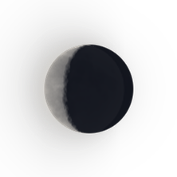

🌘 WANING CRESCENT · Absence, Memory & Undying Love · BEAUTIFUL DAMAGE · BALLAD
CORE — IF ONE REMAINS (DON'T LET THE OTHER FADE)
📜 Official Synchronized Lyrics (69 Lines)
▶ 00:00I CLOSED MY EYES AND TOOK YOUR HAND
▶ 00:04I'M NOT MADE OF STONE, I UNDERSTAND
▶ 00:09YOU STOOD ALONE FOR ANOTHER'S SIN
▶ 00:13HOW MANY NIGHTS DID YOU BURN WITHIN?
▶ 00:18I F O N E R E M A I N S
▶ 00:37I'VE SEEN LOVE, BROTHER, I'VE SEEN IT ALIVE
▶ 00:39GOLD IN THEIR HAIR, A STORM IN THEIR EYES
▶ 00:41EVEN SUSUZ WENT QUIET WHEN THEY PASSED
▶ 00:44WISH YOU COULD'VE SEEN THEM THROUGH MY EYES
▶ 00:47I LOVED A MAN WHO TAUGHT ME WHAT LOVE MEANT
▶ 00:49HE'D LOVED YOU LONG BEFORE I EVER DID
▶ 00:51"HAIR LIKE GOLD," HE'D SAY, THEN FALL TO SILENCE
▶ 00:54NO FACE WAS WAITING ON THE OTHER SIDE
▶ 00:56IF I SHOULD DIE, WOULD OUR LOVE SURVIVE?
▶ 00:58IF ONE HEART STOPS, CAN THE OTHER STAY ALIVE?
▶ 01:01AND IF THE YEARS SHOULD TEAR ME FROM YOUR ARMS
▶ 01:04LOVE WON'T LEAVE YOU STANDING THERE ALONE
▶ 01:08IF ONE REMAINS, DON'T LET THE OTHER FADE
▶ 01:12LOVE WAS NEVER MEANT TO CHOOSE WHOSE HEART TO SAVE
▶ 01:17ONE MEETS YOUR EYES, THE OTHER LOOKS AWAY
▶ 01:20BUT BOTH OF US ARE BURNING IN THE SAME FLAME
▶ 01:26THE MORE YOU LOVE US, THE MORE WE BLEED
▶ 01:30WE'VE LEARNED TO LIVE WITH WOUNDS WE CANNOT HEAL
▶ 01:35WE'RE SCARED OF WHAT YOUR LOVE CAN DO
▶ 01:39AND STILL WE CAN'T GET ENOUGH OF YOU
▶ 01:43IF ONE REMAINS, DON'T LET THE OTHER FADE
▶ 01:46IF ONE OF US SHOULD DIE, LET LOVE REMAIN
▶ 01:48IF I SHOULD LEAVE, DON'T SEARCH THE STREETS FOR ME
▶ 01:50I'LL LIVE INSIDE THE WORDS HE SPEAKS
▶ 01:53WHEN HE LOOKS AT YOU, I'LL SEE YOU TOO
▶ 01:55WHEN HE TAKES YOUR HAND, I'LL BE THERE IN HIS PALM
▶ 01:57YOU ASKED ME TO STAY, YOU BEGGED HIM NOT TO GO
▶ 02:00THAT NIGHT THE BLOOD RAN BOTH WAYS DOWN THE ROAD
▶ 02:02TWO HEARTS KEPT BEATING, SOMETHING IN ME DIED
▶ 02:05ONE WRONG CUT THROUGH ALL THREE OF OUR LIVES
▶ 02:07I HEARD HIM SPEAK OF YOU, AND THEN I KNEW
▶ 02:10YOU CAN ACHE FOR SOMEONE YOU'VE NEVER KNOWN
▶ 02:12THE WORLD FELL ONE WAY, YOUR EYES ANOTHER
▶ 02:15YOU TOLD HIM "STAY," YOU TOLD ME "DON'T GO"
▶ 02:17THREE OF US WENT QUIET ON THE SAME NIGHT
▶ 02:20I HELD MY TONGUE, AND THE LIE BECAME OUR LIFE
▶ 02:22YEARS WENT BY, YOUR FACE IN SOMEONE ELSE'S HANDS
▶ 02:25BUT YOUR EYES STILL HELD THE TWO OF US
▶ 02:29A CHILD CAME ASKING WHERE HIS FATHER'D GONE
▶ 02:33I SAID HIS NAME; THE TEARS CAME ONE BY ONE
▶ 02:37IF I SHOULD DIE, WOULD LOVE DIE TOO?
▶ 02:41DID LOVE STOP BREATHING WHEN WE LOST YOU?
▶ 02:46AND IF ONE DAY YOU OPEN UP YOUR EYES
▶ 02:50WE'LL MEET YOUR GAZE WITH NOTHING LEFT TO HIDE
▶ 02:55B O T H O F U S · B O T H O F U S
▶ 02:59IF ONE REMAINS, DON'T LET THE OTHER FADE
▶ 03:03LOVE WAS NEVER MEANT TO CHOOSE WHOSE HEART TO SAVE
▶ 03:08ONE MEETS YOUR EYES, THE OTHER LOOKS AWAY
▶ 03:11BUT BOTH OF US ARE BURNING IN THE SAME FLAME
▶ 03:17THE MORE YOU LOVE US, THE MORE WE BLEED
▶ 03:21WE'VE LEARNED TO LIVE WITH WOUNDS WE CANNOT HEAL
▶ 03:26IF ONE REMAINS, DON'T LET THE OTHER FADE
▶ 03:29IF ONE OF US SHOULD DIE, LET LOVE REMAIN
▶ 03:36IF ONE REMAINS, DON'T LET THE OTHER FADE
▶ 03:40LOVE WAS NEVER MEANT TO CHOOSE WHOSE HEART TO SAVE
▶ 03:45ONE MEETS YOUR EYES, THE OTHER LOOKS AWAY
▶ 03:49BUT BOTH OF US ARE BURNING IN THE SAME FLAME
▶ 03:57IF ONE REMAINS, DON'T LET THE OTHER FADE
▶ 04:01LOVE WAS NEVER MEANT TO CHOOSE WHOSE HEART TO SAVE
▶ 04:06IF ONE REMAINS, DON'T LET THE OTHER FADE
▶ 04:09IF ONE OF US SHOULD DIE, LET LOVE REMAIN
▶ 04:15ONCE THERE WAS ONE... THE OTHER NEVER DISAPPEARED
▶ 04:22AS LONG AS YOU LOVE... I'LL BE LOVING YOU STILL
▶ 04:27L O V E H A R D · C O R E